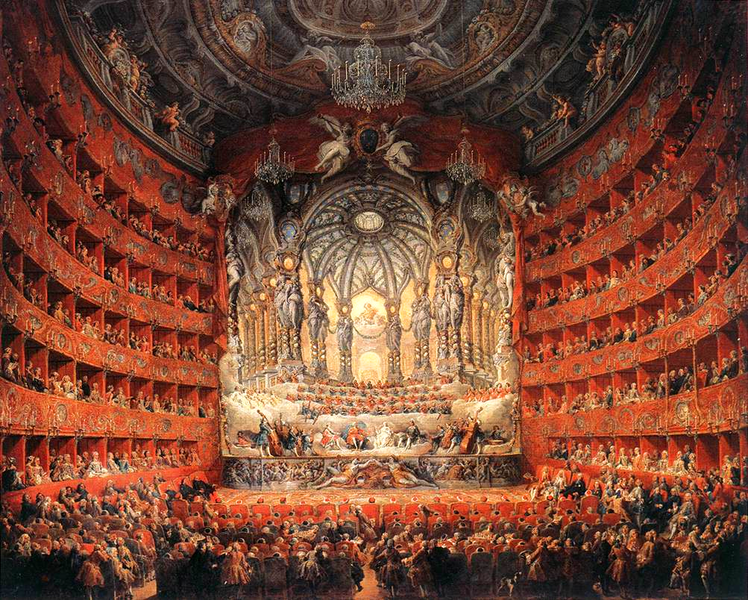

Доисторическая музыка
Доисторической, или примитивной, принято обозначать устную музыкальную традицию.
Термин «доисторическая» обычно применим к музыкальной традиции древних европейских народов, а в отношении музыки представителей остальных континентов используются другие термины – фольклорная, традиционная, народная.
Первые музыкальные звуки – это подражания человека голосам животных и птиц во время охоты. И первый в истории музыкальный инструмент – это человеческий голос. Усилием голосовых связок человек уже тогда мог виртуозно воспроизводить звуки в широком диапазоне: от пения экзотических птиц и стрекота насекомых до рыка дикого зверя.
Первым доисторическим музыкальным инструментом, существование которого официально подтверждают археологи, является флейта. В своей первобытной форме она представляла собой свисток. Свистовая трубочка приобрела отверстия для пальцев и стала полноценным музыкальным инструментом, который постепенно усовершенствовался до формы современной флейты. Прототипы флейты были обнаружены при раскопках в юго-западной Германии, датируемых периодом 35-40 тыс. лет до нашей эры.
Музыка древнего мира
Доисторическая эра заканчивается с переходом на письменную музыкальную традицию.
Старейшая известная песня, зафиксированная на клинописной табличке, была найдена на раскопках Ниппура, она датируется 2000 г до н. э. Табличка была расшифрована профессором А. Д. Килмер из Университета Беркли, также было продемонстрировано, что она сочинена терциями и использовала пифагоров строй.
Двойные трубы, такие, какие использовали, например, древние греки, и древние волынки, а также обзор древних рисунков на вазах и стенах, и древняя письменность (см., например, «Проблемы» Аристотеля, Книга XIX.12), в которой описана музыкальная техника того времени, указывают на полифонию. Одна трубка в авлосе, вероятно, создавала фон, в то время как другая играла мелодичные пассажи. Инструменты, как например флейта с семью отверстиями и различные виды струнных инструментов были найдены у цивилизации долины Инда.
Упоминания об Индийской классической музыке (марга) могут быть найдены в священных писаниях Ведах. Сама-веда, одна из четырёх вед, подробно описывает музыку. История музыки в Иране (Персии), восходит к доисторической эре. Легендарному великому царю, Джамшиду, приписывают изобретение музыки. Музыку в Иране можно проследить в прошлое до дней эламской империи (2500—644 до н. э.). Отрывочные документы из различных периодов истории страны показывают, что древние персы имели обширную музыкальную культуру. Сасанидский период (226—651 н. э.), в частности, оставил нам множество доказательств, указывающих наличие оживлённой музыкальной жизни в Персии. Имена некоторых важных музыкантов, таких, как Барбод, Накисса и Рамтин, а также названия некоторых их работ сохранились.
На стенах пирамид, в древних папирусах, в сборниках «Тексты пирамид» и «Книга мёртвых» есть строки религиозных гимнов. Встречаются «страсти» и «мистерии». Популярным сюжетом были «страсти» Осириса, который ежегодно умирал и воскресал, а также женские песни-плачи над мертвым Осирисом. Исполнение песен могло сопровождаться драматическими сценами.
Древнейшими музыкальными инструментами египтян были арфа и флейта. В период Нового царства египтяне играли на колоколах, бубнах, барабанах и лирах, импортируемых из Азии. Богатые люди устраивали приёмы с приглашением профессиональных музыкантов.
Считается, что именно в Древней Греции музыка достигла наивысшего расцвета в культуре Древнего мира. Само слово «музыка» имеет древнегреческое происхождение. В Древней Греции впервые была отмечена закономерная связь между высотой звука и числом, открытие которой традиция приписывает Пифагору.
Рост полисов, в которых проходили большие культовые и гражданские праздники, привёл к развитию xoрового пения под аккомпанемент духового инструмента. Вместе с авлосом вошла в употребление металлическая труба. Постоянные войны стимулировали развитие военной музыки. Вместе с тем развивалась и лирическая поэзия, которая распевалась под аккомпанемент музыкальных инструментов. Среди известных авторов песен — Алкей, Архилох и Сапфо.
Классиком xoровой лирики стал поэт и музыкант Пиндар, автор гимнов, застольных и победных од, отличавшихся разнообразием форм, богатством и причудливостью ритмов. Ha основе гимнов Пиндара развились дифирамбы, исполнявшиеся на дионисийских празднествах (около 600 до н. э.).
Музыка была неотъемлемой частью театральных представлений. Трагедия сочетала в себе драму, танец и музыку. Авторы трагедий — Эсхил, Софокл, Еврипид подобно древнегреческим лирическим поэтам, были одновременно и создателями музыки. По мере развития в трагедию вводились музыкальные партии корифея и актёров.
Еврипид в своих произведениях ограничил введение хоровых партий, сосредоточив основное внимание на сольных партиях актёров и корифеев, по образцу, так называемого, нового дифирамба, отличавшийся большим индивидуализацией, эмоциональностью, подвижным, виртуозным характером.
Создателями стиля нового дифирамба стали Филоксен из Китеры и Тимофей Милетский. Авторы древнегреческих комедий часто использовали многострунные кифары для сопровождения литературного текста, вводили в спектакль народные песенные мелодии.
Музыка эпохи средневековья
ЕВРОПА
В эпоху средневековья в Европе складывается музыкальная культура нового типа — феодальная, объединяющая в себе профессиональное искусство, любительское музицирование и фольклор.
Поскольку церковь господствует во всех областях духовной жизни, основу профессионального музыкального искусства составляет деятельность музыкантов в храмах и монастырях.
Светское профессиональное искусство представлено поначалу лишь певцами, создающими и исполняющими эпические сказания при дворе, в домах знати, среди воинов и т. д. (барды, скальды и др.).
Со временем развиваются любительские и полупрофессиональные формы музицирования рыцарства: во Франции — искусство трубадуров и труверов (Адам де ла Аль, XIII век), в Германии — миннезингеров (Вольфрам фон Эшенбах, Вальтер фон дер Фогельвейде, XII-XIII века), а также городских ремесленников. В феодальных замках и в городах культивируются всевозможные роды, жанры и формы песен (эпические, «рассветные», рондо, ле, виреле, баллады, канцоны, лауды и др.).
Входят в быт новые музыкальные инструменты, в том числе пришедшие с Востока (виола, лютня и т. д.), возникают ансамбли (нестабильных составов). В крестьянской среде расцветает фольклор. Действуют также «народные профессионалы»: сказители, странствующие синтетические артисты (жонглёры, мимы, менестрели, шпильманы, скоморохи).
Закреплению, сохранению и распространению традиций и эталонов (но также и их постепенному обновлению) способствовал переход от невм, лишь приблизительно указывавших характер мелодического движения, к линейной нотации (Гвидо д'Ареццо, XI век), позволившей точно фиксировать высоту тонов, а затем и их длительность.
В Западной Европе с VI-VII веков. складывается строго регламентированная система одноголосной (монодической) церковной музыки на основе диатонических ладов (григорианское пение), объединяющая речитацию (псалмодия) и пение (гимны).
На рубеже 1-го и 2-го тысячелетий зарождается многоголосие. Формируются новые вокальные (хоровые) и вокально-инструментальные (хор и орган) жанры: органум, мотет, кондукт, затем месса. Во Франции в XII веке образуется первая композиторская (творческая) школа при Соборе Парижской богоматери (Леонин, Перотин).
На рубеже Возрождения (стиль ars nova во Франции и Италии, XIV века) в профессиональной музыке одноголосие вытесняется многоголосием, музыка начинает понемногу освобождаться от сугубо практической функций (обслуживание церковных обрядов), в ней усиливается значение светских жанров, в том числе песенных (Гильом де Машо).
ВОСТОЧНАЯ ЕВРОПА И АЗИЯ
В Восточной Европе и Закавказье (Армения, Грузия) развиваются свои музыкальные культуры с самостоятельными системами ладов, жанров и форм.
В Византии, Болгарии, Киевской Руси, позднее Новгороде расцветает культовое знаменное пение (Знаменный распев), основанное на системе диатонических гласов, ограничивающееся только чисто вокальными жанрами (тропари, стихиры, гимны и др.) и использующее особую систему записи нот (крюки).
В это же время на Востоке (Арабский халифат, страны Средней Азии, Иран, Индия, Китай, Япония) формируется феодальная музыкальная культура особого типа. Её признаки — широкое распространение светского профессионализма (как придворного, так и народного), приобретающего виртуозный характер, ограничение устной традицией и монодическими (мелодия без аккомпанемента) формами, достигающими, однако, высокой изощрённости в отношении мелодики и ритмики, создание весьма устойчивых национальных и межнациональных систем музыкального мышления, объединяющих в себе строго определённые виды ладов, жанров, интонационных и композиционных структур (мугамы, макамы, раги и др.).
Музыка эпохи Возрождения
МУЗЫКА РЕНЕССАНСА (1534-1600)
В Венеции, примерно от 1534 до приблизительно 1600, впечатляет polychoral с развитым стилем, который дал Европе некоторые из самых больших, наиболее звучных мелодий, бывших до этого времени, с несколькими хорами певцов, латуни и струн в различные пространственные места в базилике Сан - Marco Di Venezia (венецианской школы).
Римскую школу представляла группа композиторов преимущественно церковной музыки в Риме, охватывающее поздний Ренессанс и раннее Барокко эпохи. Наиболее известным композитором римских школ был Джованни Пьерлуиджи да Палестрина, чье имя ассоциируется четыреста лет с гладким, четким, полифоническим совершенством.
Краткого, но интенсивного музыкального расцвета достиг мадригал в Англии, в основном от 1588 до 1627, а также композиторы, его породившие. Английские мадригалы - это капелла, преимущественно в свете и стиле, и в целом, начали либо как копии или прямой перевод итальянских моделей. Большинство из них было по три-шесть голосов.
Musica reservata стиля или практика в исполнении капеллы вокальной музыки, в основном в Италии и южной Германии, включая уточнение и интенсивное эмоциональное выражение, пели тексты.
Кроме того, многие композиторы демонстрировали деление в своих работах между Prima Пратика (музыка в стиле ренессанса полифонического) и Seconda Пратика (музыка в новом стиле) в течение первой половины 17 века.
Музыка эпохи барокко
Музыка эпохи барокко- период в развитии европейской классической музыки приблизительно между 1600 и 1750 годами.
Барочная музыка появилась в конце эпохи Возрождения и предшествовала музыке эпохи классицизма.
Сочинительские и исполнительские приёмы периода барокко стали неотъемлемой и немалой частью музыкального классического канона.
Сильное развитие получили такие понятия, как теория музыки, диатоническая тональность, имитационный контрапункт. Музыкальный орнамент стал весьма изощрённым, сильно изменилась музыкальная нотация, развились способы игры на инструментах. Расширились рамки жанров, выросла сложность исполнения музыкальных произведений, появился такой вид сочинений, как опера. Большое число музыкальных терминов и концепций эры барокко используются до сих пор.
В эпоху барокко родились такие гениальные произведения, как фуги Иоганна Себастьяна Баха, хор «Аллилуйя» из оратории «Мессия» Георга Фридриха Генделя, «Времена года» Антонио Вивальди, «Вечеря» Клаудио Монтеверди.
Условной точкой перехода между эпохами барокко и ренессанса можно считать создание итальянским композитором Клаудио Монтеверди (1567—1643) его речитативного стиля и последовательное развитие итальянской оперы. Начало оперных спектаклей в Риме и особенно в Венеции означало уже признание и распространение нового жанра по стране.
Композиторы ренессанса уделяли внимание проработке каждой части музыкального произведения, практически не уделяя внимания сопоставлению этих частей. По отдельности каждая часть могла звучать превосходно, но гармоничный результат сложения был, скорее, делом случая, чем закономерности.
Появление фигурного баса указывало на значительное изменение в музыкальном мышлении — а именно то, что гармония, являющаяся «сложением частей в одно целое», так же важна, как и мелодические части полифония сами по себе. Всё больше и больше полифония и гармония выглядели, как две стороны одной идеи сочинения благозвучной музыки: при сочинении гармоническим секвенциям уделялось то же внимание, что и тритонам при создании диссонанса.
Италия становится центром нового стиля. Папство, хотя и захваченное борьбой с реформацией, но тем не менее обладающее огромными денежными ресурсами, пополняемыми за счёт военных походов Габсбургов, искало возможности распространения католической веры с помощью расширения культурного влияния.
Одним из важных центров музыкального искусства была Венеция, бывшая в то время как под светским, так и под церковным патронажем.
Музыка периода классицизма
Музыка периода классицизма- период в развитии европейской музыки приблизительно между 1730 и 1820 годами
Понятие классицизма в музыке устойчиво ассоциируется с творчеством Гайдна, Моцарта и Бетховена, называемых венскими классиками и определивших направление дальнейшего развития музыкальной композиции.
Именно в этот период окончательно сформировалась сонатная форма, основанная на разработке и противопоставлении двух контрастных тем, определился классических состав частей сонаты и симфонии.
В период классицизма появляется струнный квартет состоящий из двух скрипок, альта и виолончели, значительно расширяется состав оркестра.
Романтизм
Романтизм - период развития музыки с 1820 года до начала ХХ века
Романтизм — идейное и художественное направление в европейской и американской культуре конца XVIII — 1-й половины XIX в.
В музыке романтизм сформировался в 1820-х гг. и сохранял свое значение вплоть до начала XX в. Ведущим принципом романтизма становится резкое противопоставление обыденности и мечты, повседневного существования и высшего идеального мира, создаваемого творческим воображением художника.
Первоначально романтизм выступил как принципиальный противник классицизма. Античному идеалу было противопоставлено искусство средних веков, далеких экзотических стран. Романтизм открыл сокровища народного творчества — песен, сказаний, легенд. Однако противоположность романтизма классицизму все же относительна, так как романтики восприняли и развили дальше достижения классиков. На многих композиторов большое влияние оказало творчество последнего венского классика — Л. Бетховена.
Принципы романтизма утверждали выдающиеся композиторы разных стран. Это К. М. Вебер, , Г. Берлиоз, Ф. Мендельсон, Р. Шуман, Ф. Шопен, Ф.Шуберт Ф.Лист. Р.Вагнер Дж.Верди
Для музыканта-романтика процесс важнее результата, существеннее достижения. Они, с одной стороны, тяготеют к миниатюре, часто включаемой ими в цикл других, как правило, разнохарактерных пьес; с другой — утверждают свободные композиции, в духе романтических поэм. Именно романтики разработали новый жанр — симфоническую поэму. Чрезвычайно велик вклад композиторов-романтиков и в развитие симфонии, оперы, а также балета.
Среди композиторов 2-й половины XIX — начала XX в.,: в чьем творчестве романтические традиции способствовали утверждению гуманистических идей, — И. Брамс, А. Брукнер, Г. Малер, Р. Штраус, Э. Григ, Б. Сметана, А. Дворжак и другие
В России отдали дань романтизму едва ли не все великие мастера русской классической музыки. Велика роль романтического мироощущения в произведениях основоположника русской музыкальной классики М. И. Глинки, особенно в его опере «Руслан и Людмила».
В творчестве его великих продолжателей при общей реалистической направленности роль романтических мотивов была значительна. Они сказались в ряде сказочно-фантастических опер Н. А. Римского-Корсакова, в симфонических поэмах П. И. Чайковского и композиторов «Могучей кучки».
Музыка 20-го века
Музыка 20-го века - общее обозначение группы течений в искусстве конца 19 и нач. 20 в.в., в частности Модернизма, выступающего под девизом современности, новаторства. Эти течения включают в себя также Экспрессионизм, Конструктивизм, Неоклассицизм, а также Додекафонию, электронную музыку и т.п.
МОДЕРНИЗМ
Музыка в период 1910 - 1960 гг.
ХХ век - время, когда технологии изменили мир. Музыка как неотъемлемая часть человеческой жизни также претерпела глобальные изменения. Композиторы опрокинули многие музыкальные правила прошлого и нашли новые, смелые темы и новые способы их выражения.
Одной из значительных фигур, изменивших музыку в первой половине столетия, был Арнольд Шёнберг - австрийский, затем американский композитор, дирижёр, музыковед. Возглавляемая им группа музыкантов решила, что тональная музыка (логическое построение соразмерных аккордов) исчерпала себя, и они предложили так называемую атональную музыку и 12-тоновой систему композиции (известную как "додекафония" или "серийная техника"). Такая музыка перестала быть мелодичной и гармоничной, не все композиторы восприняли их идеи.
ЭКСПРЕССИОНИЗМ
Экспрессионизм- сформировался в 1-м десятилетии XX века
Экспрессионизм в музыке сформировался в 1-м десятилетии 20 в.; ряд его элементов проявился в последних произведениях Г. Малера ("Песнь о земле", 1908; 9-я, 1909 и неоконченной 10-я симфонии) и операх. Р. Штрауса ("Саломея", 1905; "Электра", 1908).
Однако В большей степени он связан с творчеством композиторов т. н. новой венской школы - А. Шёнберга (глава школы), А. Берга и А. Веберна. Шёнберг, начавший свой путь с произведений, близких позднему романтизму, пришёл к отрицанию романтических идеалов, сменившихся у него настроениями безотчётной тревоги, страха перед действительностью, пессимизмом и скепсисом.
Композиторы этого направления выработали круг особых средств музыкальной выразительности; они отказались от широкой напевной мелодики, ясных тональных устоев; принцип атональности способствовал выражению зыбких душевных состояний и необъяснимого смутного беспокойства.
Многие произведения отличаются лаконизмом, давая лишь намёки на какой-либо образ или душевное переживание (в цикле Веберна "5 пьес для оркестра", 1910, некоторые части длятся менее 1 мин.)
Произведения, написанные в додекафонной технике, основаны на различного рода повторениях т. н. серии, что является, по мнению представителей этой школы, развитием принципов формообразования музыки барокко и раннего классицизма, Один из ранних типичных образцов - монодрама Шёнберга "Ожидание" (1909).
В творчестве Веберна Э. перерождается в иную стилистическую формацию, где господствует абстрактно-рационалистическое конструктивное начало. Поэтому именно Веберн был признан родоначальником послевоенного музыкального авангардизма.
Атональная музыка (греч. а — отрицательная частица; буквально — внетональная музыка), понятие, относящееся к музыке, не имеющей тональной организации звуков. Возникло в начале 1900-х гг. и было связано с творчеством композиторов новой венской школы (А. Шёнберг, А. Берг, А. Веберн). Основной признак А. м. — отсутствие объединяющего соотношения тонов с главным центром лада — тоникой. Отсюда — аморфность музыкальной речи, распад структурных функций гармонии, диссонантный уровень звучания и т.п.
В 1922 Шёнберг изобрёл метод композиции «с 12 соотнесёнными лишь между собой тонами» (получивший затем наименование додекафония), в задачу которого входило внесение в анархию А. м. строгого порядка. А. м. лежит в основе многих систем композиции, входящих в арсенал авангардизма. Эстетические принципы А. м. тесно связаны с экспрессионизмом. Метод, приёмы и элементы А. м. встречаются у композиторов различных направлений (Ч. Айве, Б. Бриттен, Б. Барток, А. Онеггер и др.).
КОНСТРУКТИВИЗМ
Конструктивизм находит выражение в комбинировании жестких, резко диссонирующих созвучий, синкопированных, ломанных ритмических фигур. В музыке Конструктивизма часто применяются джазовые звучания. Несмотря на полемику, жарко разгоревшуюся вокруг этого направления, Конструктивизм, как стиль, жив по сей день и пользуется заслуженным уважением. Экстремальное направление в искусстве XX века, получившее особенно широкое развитие после Первой мировой войны.
Конструктивизм отмечен культом машины, обезличивает человека, умаляет либо вовсе отрицает идейно-эмоциональное содержание искусства. В применении к музыке сводит творчество к "строительству" звуковых форм, комбинированию различных элементов музыкальной
НЕОКЛАССИЦИЗМ
Неоклассицизм - течение в музыкальном творчестве 20 в., стремящееся возродить художественные образы, формы и стилистические приемы музыки классического периода, к которой в данном случае относят различные музыкальные школы 18 в. и более ранних веков.
Неоклассицизм в музыке был тенденцией двадцатого века, особенно актуальной в период между этими двумя мировыми войнами, во время которых композиторы стремились возвратиться к эстетическим предписаниям, связанным с широко определенным понятием "классицизма", а именно, заказать, балансировать, ясность, экономика, и эмоциональная сдержанность.
Также, неоклассицизм был реакцией против несдержанного эмоционализма и чувствовал бесформенность последнего романтизма, так же как "призыв к порядку" после экспериментального фермента первых двух десятилетий двадцатого века.
В форме и тематической технике, неоклассическая музыка часто черпала вдохновение в музыке 18-ого столетия, хотя вдохновляющий канон принадлежал так часто барочным и еще более ранним периодам относительно Классического периода по этой причине, музыку, которая тянет вдохновение определенно из Барокко, иногда называют нео причудливой.
У неоклассицизма было две отличных национальных линии развития, французский язык (происхождение влияния Эрика Сати, и представлял Игорем Стравинским), и немецкий язык (происхождение "Нового Объективизма" Ферруччо Бузони, и представлял Паулем Хиндемитом.) Неоклассицизм был эстетической тенденцией, а не организованным движением; даже много композиторов не обычно мысль как "neoclassicists" поглощали элементы стиля.